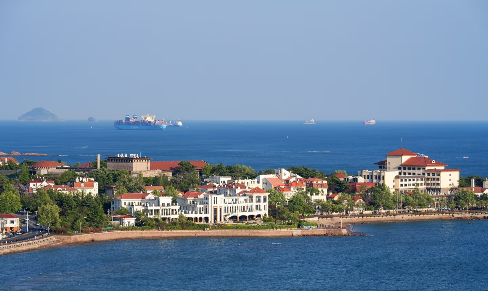
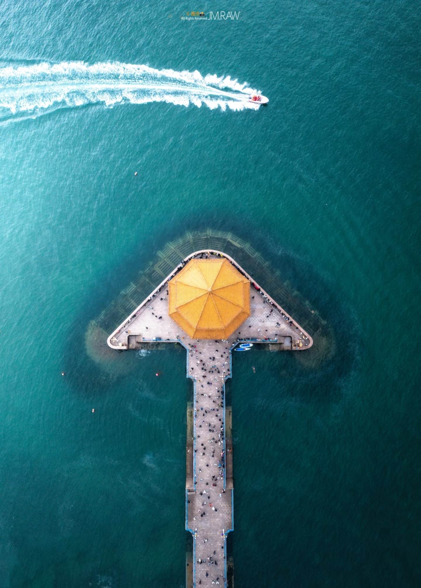
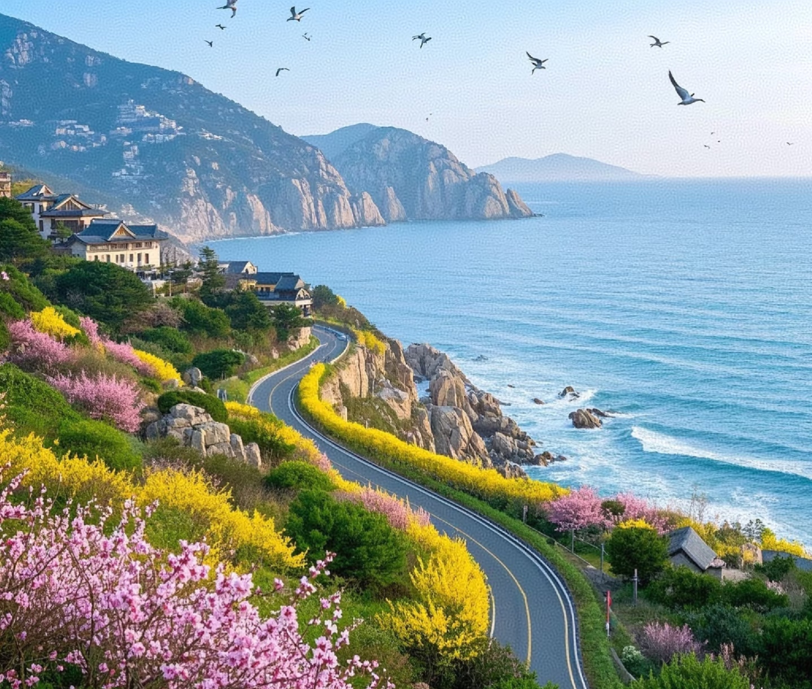
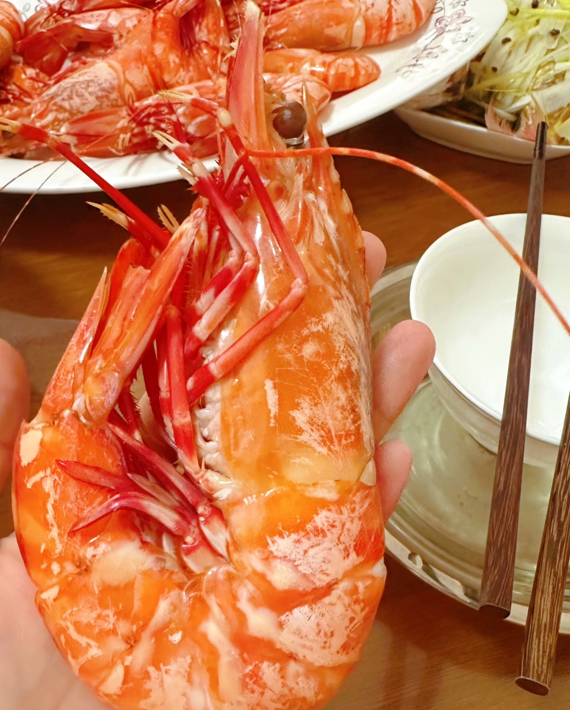
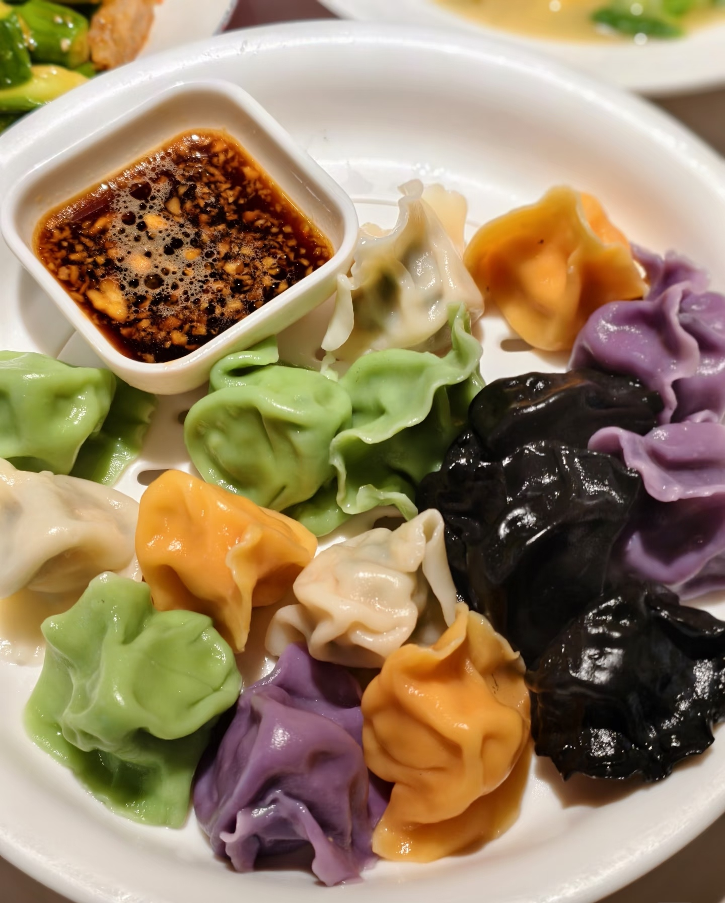
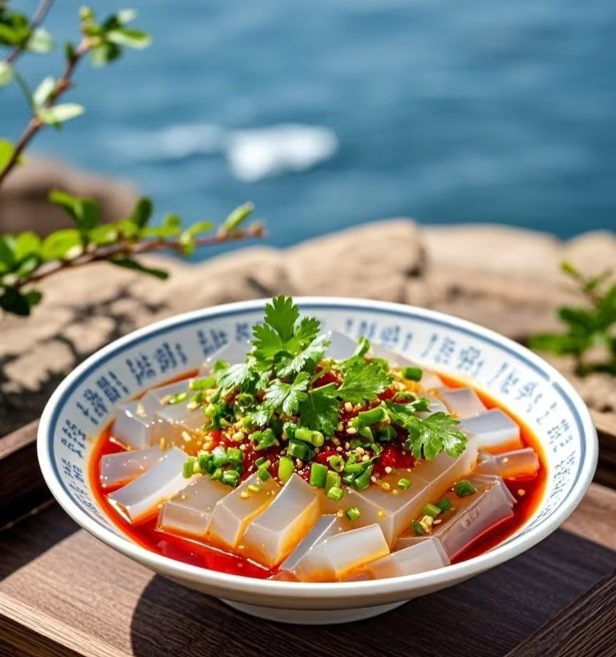

1.青岛的清晨，从一碗海胆馄饨或一锅海鲜卤汁里醒来，咸湿的海风裹着市井烟火气，穿过红瓦里院的巷口。拎一袋散啤，就着蛤蜊的肥嫩，这座城的豪爽与惬意便在舌尖咕嘟作响。
2.而另一面，八大关的梧桐影下藏着百年的老楼，圣弥厄尔教堂的钟声与海浪轻轻和鸣。青岛把浪漫砌进了每块礁石与弯月般的沙滩，纵身一跃便是山海相拥的温柔。

八大关是青岛"万国建筑博览馆"，数百幢异国老楼掩映在红瓦绿树间，四季花街蜿蜒入海，每一步都踏着复古与浪漫的交响。

百年栈桥如长虹卧波，自海岸直探碧海深处，尽头回澜阁飞檐斗拱，与漫天海鸥共舞，是青岛这座"琴岛"最经典的名片与观海听涛的绝佳处。

崂山是"泰山虽云高，不如东海崂"的仙峰，巨峰凌霄、太清枕涛，山海相连处藏着千年道骨与漫山奇石云泉。


